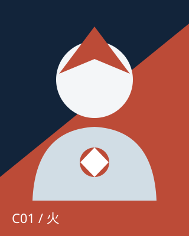
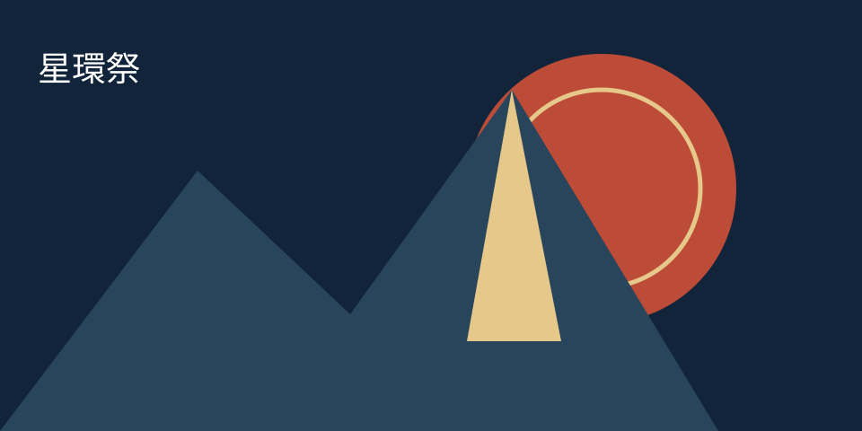

<!doctype html>
<html lang="ja"><meta charset="utf-8"><meta name="viewport" content="width=device-width,initial-scale=1"><title>攻略サイト実験：接続確認</title>
<style>*{box-sizing:border-box}body{font:16px/1.7 system-ui,sans-serif;margin:0;background:#f4f6f8;color:#172638}main{max-width:800px;margin:auto;padding:24px}img{width:120px;max-width:100%}input,button{font:inherit;padding:12px;max-width:100%}button{cursor:pointer}a:focus-visible,input:focus-visible,button:focus-visible{outline:3px solid #087e8b;outline-offset:3px}.assets{display:flex;gap:16px;flex-wrap:wrap}output{display:block;margin-top:20px}small{display:block}</style>
<main><h1>実装前の接続確認</h1><p>これはテスト環境の確認専用ページです。攻略サイトの完成見本ではありません。</p><p><a href="README.md">次セッションの入口</a> · <a href="DESIGN.md">共通設計</a></p><p id="data-status" role="status">固定データを読込み中…</p><div class="assets"></div><form><label for="check-input">確認用の文字</label><br><input id="check-input" required value="接続確認"><button type="submit">確認する</button></form><output id="result" aria-live="polite"></output><small>Tabで入力欄とボタンへ移動し、Enterで確認してください。保存・外部送信は行いません。</small></main>
<script>fetch('fixtures/content.json').then(r=>{if(!r.ok)throw Error(r.status);return r.json()}).then(d=>{document.querySelector('#data-status').textContent=`キャラ${d.characters.length}体・攻略${d.guides.length}記事・イベント${d.events.length}件・スレッド${d.threads.length}件を読込みました。`}).catch(()=>document.querySelector('#data-status').textContent='固定データを読み込めません。配信URLを確認してください。');document.querySelector('form').addEventListener('submit',e=>{e.preventDefault();document.querySelector('#result').textContent='確認済み：'+document.querySelector('#check-input').value});</script></html>
